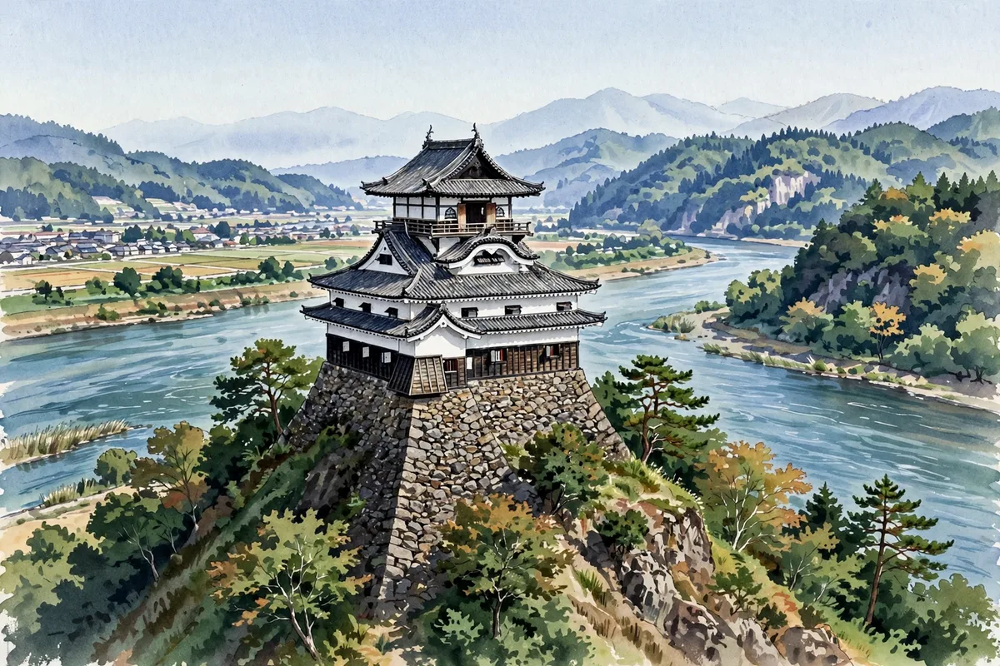

Inuyama Castle and the Kiso River: Views of the River and Castle Town from a National Treasure Keep

Inuyama Castle also appeared in our introduction of the five National Treasure castles; here we dig into it from the angle of the 'Kiso River.' The figure of Inuyama Castle cannot be told apart from the river.
【A Keep Standing on a Cliff】Inuyama Castle is a hirayama castle built at the tip of hills facing the Kiso River. Its back is protected by the river, and the castle town spreads to the south of the keep. The keep is of the boro (lookout) type, and as for its construction date, it is sometimes said to be the oldest surviving keep — though views on its dating differ.
【The Naruse Clan and Inuyama】In the Edo period, Inuyama Castle is known as the castle governed by the Naruse clan, senior retainers (karo) of the Owari domain. Its history of long maintenance as a privately owned castle is another of Inuyama Castle's distinctive traits. Fix the point that its keep is designated a National Treasure together with your review of the five National Treasure castles.
【The Kiso River from the Keep】From the top floor of the keep, the flow of the Kiso River and the mountains on the opposite bank spread out before you. The river was a defense, and at the same time the view itself was part of the castle's value. Nearby is a stretch famed as a scenic spot of the Kiso River, making this a place to enjoy the landscape of castle and river as one. The castle town also has streets preserving traces of samurai residences, which you can tour on foot.
【Exam Study Points】A castle involved in both the boro-type keeps of Chapter 2 and the five National Treasure castles of Chapter 4 of the textbook. Organize it in the combination 'Inuyama Castle = boro type, National Treasure, Kiso River' and exam questions become easier to handle.
When you go to Inuyama Castle, savor both the view from the top floor and the view from the riverside promenade, not just the inside of the keep. The castle's face changes with the direction you look from.
- Kumamoto Castle's Road to Recovery: From the 2016 Earthquake to the Restored Keep and the Long Way to Full Restoration
- Hikone Castle and the Ii Clan's Castle Town: The National Treasure Keep, Genkyuen Garden and a Walk by Lake Biwa
- Nijo Castle in Kyoto and Tokugawa Rule: A Shogun's Residence Designed Not for War
Recommended books for this article
Castle Guide
Samurai Castles: History / Architecture / Visitors' Guides
Hundreds of color photographs and close-up detail on Japan's most important surviving samurai castles — their history, design and military features, with guidance for visitors. The best single companion for castle sightseeing.
View at Barnes & NobleCheck the price at Barnes & Noble
Castle History
Japanese Castles 1540–1640
Author: Stephen Turnbull
The great castles of Japan's warring-states era: how the strongholds of the daimyo were built, defended and attacked, explained by the leading English-language historian of samurai warfare, with illustrations throughout.
View at Pickwick BookshopCheck the price at Pickwick Bookshop
Travel Guide
Lonely Planet Japan (Travel Guide), 19th Edition
Author: Lonely Planet
The standard Japan travel guide in its 19th edition — trip planning, itineraries, transport and on-the-ground detail. The practical backbone for a castle-and-shrine trip.
View at TargetCheck the price at Target
Book links on this page go to the retailers' product pages. Prices and availability are shown on the retailer's page.